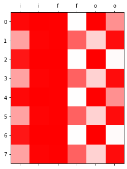
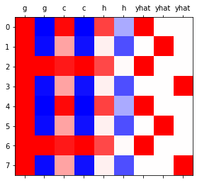
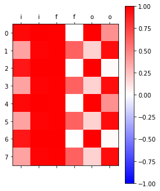
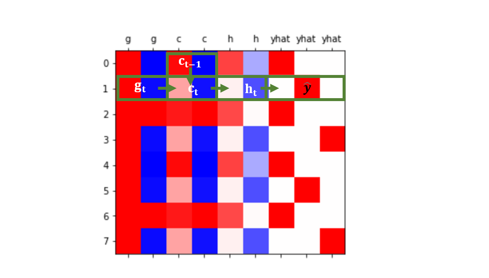

순환신경망 6
LSTM (2) - LSTM의 계산과정, LSTM은 왜 강한가?
import
Define some functions
LSTM의 계산과정
data: abaB
1 epoch ver1 (with torch.nn.LSTMCell)
1 epoc ver2 (완전 손으로 구현)
\(t=0 \to t=1\)
- lstm_cell을 이용한 계산 (결과비교용)
T = len(x)
for epoc in range(1):
ht = torch.zeros(1,2)
ct = torch.zeros(1,2)
loss = 0
## 1~2
for t in range(1):
xt,yt = x[[t]], y[[t]]
ht,ct = lstm_cell(xt,(ht,ct))
# ot = linr(ht)
# loss = loss + loss_fn(ot,yt)
# loss = loss / T
# ## 3
# loss.backward()
# ## 4
# optimizr.step()
# optimizr.zero_grad()(tensor([[-0.0541, 0.0892]], grad_fn=<MulBackward0>),
tensor([[-0.1347, 0.2339]], grad_fn=<AddBackward0>))이런결과를 어떻게 만드는걸가?
https://pytorch.org/docs/stable/generated/torch.nn.LSTM.html
\[\begin{align*}i_t & = \sigma(W_{ii}x_t + b_{ii} + W_{hi}h_{t-1}+b_{hi}) \\ f_t & = \sigma(W_{if}x_t + b_{if} +W_{hf}h_{t-1}+b_{hf}) \\ g_t & = \text{tanh} (W_{ig}x_t + b_{ig} + W_{hg}h_{t-1}+b_{hg} \\ o_t & = \sigma(W_{io}x_t + b_{io}+W_{ho}h_{t-1} +b_{ho}) \\ c_t & = f_t\odot c_{t-1} + i_t \odot g_t \\ h_t &= o_t \odot \text{tanh}(c_t) \end{align*}\]
\(h_t\): hidden state at \(t\)
\(c_t\): cell state at time \(t\)
\(x_t\): the input at time \(t\)
\(h_{t-1}\): the hidden state of the layer at time \(t-1\)
\(i_t, f_t, g_t, o_t\): input,forget,cell,and output gates, respectively
\(\sigma\): the sigmoid function
\(\odot\): the Hadamard product
(참고) \(\odot\) : elment-wise 하게 곱하는 연산자
- \((1,2) \odot (3,0) = (3,0)\)
- 직접계산
\[(x_t, h_{t-1}) \overset{lin}{\to} [a,b,c,d] \to [\sigma(a), \sigma(b),\text{tanh}(c),\sigma(d)] = [i_t,f_t,g_t,o_t]\]
_ifgo = xt @ lstm_cell.weight_ih.T + ht @ lstm_cell.weight_hh.T + lstm_cell.bias_ih + lstm_cell.bias_hh
_ifgotensor([[ 0.0728, 0.1561, 0.0693, 0.5941, -0.2661, 0.4648, -0.3884, -0.4536]],
grad_fn=<AddBackward0>)\(t=0 \to t=T\)
T = len(x)
for epoc in range(1):
ht = torch.zeros(1,2)
ct = torch.zeros(1,2)
loss = 0
## 1~2
for t in range(T):
xt,yt = x[[t]], y[[t]]
## lstm_cell step1: calculate _ifgo
_ifgo = xt @ lstm_cell.weight_ih.T + ht @ lstm_cell.weight_hh.T + lstm_cell.bias_ih + lstm_cell.bias_hh
## lstm_cell step2: decompose _ifgo
input_gate = sig(_ifgo[:,0:2])
forget_gate = sig(_ifgo[:,2:4])
gt = tanh(_ifgo[:,4:6])
output_gate = sig(_ifgo[:,6:8])
## lstm_cell step3: calculate ht,ct
ct = forget_gate * ct + input_gate * gt
ht = output_gate * tanh(ct)
# ot = linr(ht)
# loss = loss + loss_fn(ot,yt)
# loss = loss / T
# ## 3
# loss.backward()
# ## 4
# optimizr.step()
# optimizr.zero_grad()(tensor([[-0.0406, 0.2505]], grad_fn=<MulBackward0>),
tensor([[-0.0975, 0.7134]], grad_fn=<AddBackward0>))(tensor([[-0.0406, 0.2505]], grad_fn=<MulBackward0>),
tensor([[-0.0975, 0.7134]], grad_fn=<AddBackward0>))1 epoch ver3 (with torch.nn.LSTM)
LSTM은 왜 강한가?
data: abaB
(['a', 'b', 'a', 'B', 'a', 'b', 'a', 'B', 'a', 'b'],
['b', 'a', 'B', 'a', 'b', 'a', 'B', 'a', 'b', 'a'])1000 epoch
시각화
for t in range(T):
## 1: calculate _ifgo
_ifgo = x[[t]] @ lstm.weight_ih_l0.T + h[[t]] @ lstm.weight_hh_l0.T + lstm.bias_ih_l0 + lstm.bias_hh_l0
## 2: decompose _ifgo
input_gate[[t]] = sig(_ifgo[:,0:2])
forget_gate[[t]] = sig(_ifgo[:,2:4])
g[[t]] = tanh(_ifgo[:,4:6])
output_gate[[t]] = sig(_ifgo[:,6:8])
## 3: calculate ht,ct
cell[[t]] = forget_gate[[t]] * cell[[t]] + input_gate[[t]] * g[[t]]
h[[t]] = output_gate[[t]] * tanh(cell[[t]])plt.matshow(combinded1[-8:].data,cmap='bwr',vmin=-1,vmax=1);
plt.xticks(range(combinded1.shape[-1]),labels=['i']*2 + ['f']*2 + ['o']*2);
plt.matshow(combinded2[-8:].data,cmap='bwr',vmin=-1,vmax=1)
plt.xticks(range(combinded2.shape[-1]),labels=['g']*2 + ['c']*2 + ['h']*2 + ['yhat']*3);

- 상단그림은 게이트의 값들만 시각화, 하단그림은 게이트 이외의 값들을 시각화
시각화의 해석 I
plt.matshow(combinded1[-8:].data,cmap='bwr',vmin=-1,vmax=1);
plt.xticks(range(combinded1.shape[-1]),labels=['i']*2 + ['f']*2 + ['o']*2);
plt.colorbar()<matplotlib.colorbar.Colorbar at 0x7fb0131c8a60>
- input gate, forget gate, output_gate는 모두 \(0\sim 1\) 사이의 값을 가진다.
- (참고) 파:\(-1\), 흰:\(0\), 빨:\(1\)
- 이 값들은 각각 모두 \(g_t, c_{t-1}, \text{tanh}(c_t)\) 에 곱해진다. 따라서 input_gate, forget_fate, ouput_gate는 gate의 역할로 비유가능하다. (1이면 통과, 0이면 차단)
- input_gate: \(g_t\) 의 값을 얼만큼 통과시킬지 \(0\sim 1\) 사이의 숫자로 결정
- forget_gate: \(c_{t-1}\)의 값을 얼만큼 통과시킬지 \(0\sim 1\) 사이의 숫자로 결정
- output_gate: \(\text{htan}(c_t)\) 의 값들을 얼만큼 통과시킬지 \(0\sim 1\) 사이의 숫자로 결정
input/forget/output gate가 진짜 문지기 같은 역할을 함 (어떤 값을 통과시킬지 말지 0과 1사이의 숫자로 정해주는 역할을 한다.) 그렇기 때문에 gate라는 이름이 붙게 되었다.
시각화의 해석 II
plt.matshow(combinded2[-8:].data,cmap='bwr',vmin=-1,vmax=1)
plt.xticks(range(combinded2.shape[-1]),labels=['g']*2 + ['c']*2 + ['h']*2 + ['yhat']*3);
- 결국 \(g_t \to c_t \to h_t \to \hat{y}\)의 느낌이다. (\(h_t\)를 계산하기 위해서는 \(c_t\)가 필요했고, \(c_t\)를 계산하기 위해서는 \(c_{t-1}\) 과 \(g_t\)가 필요했음)
- \(h_t = \text{tanh}(c_t) \odot o_t\)
- \(c_t = c_{t-1} \odot f_t + g_t \odot i_t\)

- \(g_t, c_t, h_t\) 모두 \(x_t\)의 정보를 숙성시켜 가지고 있는 느낌이 든다.
- \(g_t\)의 특징: 보통 -1, 1 중 하나의 값을 가지도록 학습되어 있다. (마치 RNN의 hidden node처럼!)
- \(g_t = \text{tanh}(x_t\bf{W}_{ig}+h_{t-1}\bf{W}_{hg}+b_{ig}+b_{hg})\)
- \(c_t\)의 특징: \(g_t\)와 매우 비슷하지만 약간 다른 값을 가진다. 그래서 \(g_t\)와 달리 \(-1,1\) 이외의 값도 종종 등장.
- \(g_t, c_t, h_t\) 모두 콩물(\(x_t\))를 숙성시킨 간장이지만 \(g_t\) 보다는 \(c_t\)가 더, \(h_t\)보다는 \(c_t\)가 더 숙성된 느낌이다.
- \(g_t\)는 진한 빨/파 였다면 \(c_t\)는 \(g_t\)와 유사하지만 좀 더 연한 빨/파, \(h_t\)는 \(c_t\)와 유사하지만 더 연한 빨/파
print("first row: gt={}, ct={}".format(g[-8].data, cell[-8].data))
print("second row: gt={}, ct={}".format(g[-7].data, cell[-7].data))
#g[-7], cell[-7]first row: gt=tensor([ 0.9999, -0.9999]), ct=tensor([ 0.9647, -0.9984])
second row: gt=tensor([ 0.9970, -0.9554]), ct=tensor([ 0.3592, -0.9373])- \(h_t\)의 특징: (1) \(c_t\)의 느낌이 있음 하지만 약간의 변형이 있음. (2) -1~1 사이의 값을 훨씬 다양하게 가진다. (tanh때문)
print("first row: gt={}, ct={}, ht={}".format(g[-8].data, cell[-8].data,h[-8].data))
print("second row: gt={}, ct={}, ht={}".format(g[-7].data, cell[-7].data,h[-7].data))
#g[-7], cell[-7]first row: gt=tensor([ 0.9999, -0.9999]), ct=tensor([ 0.9647, -0.9984]), ht=tensor([ 0.7370, -0.3323])
second row: gt=tensor([ 0.9970, -0.9554]), ct=tensor([ 0.3592, -0.9373]), ht=tensor([ 0.0604, -0.6951])- 예전의문 해결
실험적으로 살펴보니 LSTM이 RNN보다 장기기억에 유리했음.
그 이유: RNN은 \(h_t\)의 값이 \(-1\) 혹은 \(1\)로 결정되는 경우가 많았음. 그러나 경우에 따라서는 \(h_t\)이 -1~1의 값을 가지는 것이 문맥적 뉘앙스를 포착하기에는 유리한다 LSTM이 이러한 방식으로 학습되는 경우가 많았음.
왜 LSTM의 \(h_t\)은 -1,1 이외의 값을 쉽게 가질 수 있는가? (1) gate들의 역할 (2) 마지막에 취해지는 tanh때문
LSTM의 알고리즘 리뷰 I (수식위주)
(step1) calculate \(\tt{ifgo}\)
\({\tt ifgo} = {\boldsymbol x}_t \big[{\bf W}_{ii} | {\bf W}_{if}| {\bf W}_{ig} |{\bf W}_{io}\big] + {\boldsymbol h}_{t-1} \big[ {\bf W}_{hi}|{\bf W}_{hf} |{\bf W}_{hg} | {\bf W}_{ho} \big] + bias \\ =\big[{\boldsymbol x}_t{\bf W}_{ii} + {\boldsymbol h}_{t-1}{\bf W}_{hi} ~\big|~ {\boldsymbol x}_t{\bf W}_{if}+ {\boldsymbol h}_{t-1}{\bf W}_{hf}~ \big|~ {\boldsymbol x}_t{\bf W}_{ig} + {\boldsymbol h}_{t-1}{\bf W}_{hg} ~\big|~ {\boldsymbol x}_t{\bf W}_{io} + {\boldsymbol h}_{t-1}{\bf W}_{ho} \big] + bias\)
참고: 위의 수식은 아래코드에 해당하는 부분
(stpe2) decompose \(\tt{ifgo}\) and get \(i_t,f_t,g_t,o_t\)
\({\boldsymbol i}_t = \sigma({\boldsymbol x}_t {\bf W}_{ii} + {\boldsymbol h}_{t-1} {\bf W}_{hi} +bias ) \\ {\boldsymbol f}_t = \sigma({\boldsymbol x}_t {\bf W}_{if} + {\boldsymbol h}_{t-1} {\bf W}_{hf} +bias ) \\ {\boldsymbol g}_t = \tanh({\boldsymbol x}_t {\bf W}_{ig} + {\boldsymbol h}_{t-1} {\bf W}_{hg} +bias ) \\ {\boldsymbol o}_t = \sigma({\boldsymbol x}_t {\bf W}_{io} + {\boldsymbol h}_{t-1} {\bf W}_{ho} +bias )\)
(step3) calculate \(c_t\) and \(h_t\)
\({\boldsymbol c}_t = {\boldsymbol i}_t \odot {\boldsymbol g}_t+ {\boldsymbol f}_t \odot {\boldsymbol c}_{t-1} \\ {\boldsymbol h}_t = \tanh({\boldsymbol o}_t \odot {\boldsymbol c}_t)\)
LSTM의 알고리즘 리뷰 II (느낌위주)
이해 및 암기를 돕기위해서 비유적으로 설명한 챕터!
- 느낌1: RNN이 콩물에서 간장을 한번에 숙성시키는 방법이라면 LSTM은 콩물에서 간장을 3차로 나누어 숙성하는 느낌이다.
- 콩물: \(\boldsymbol x_t\)
- 1차숙성: \(\boldsymbol g_t\)
- 2차숙성: \(\boldsymbol c_t\)
- 3차숙성: \(\boldsymbol h_t\)
- 느낌2: \(g_t\) 에 대하여
- 계산방법: \(x_t\)와 \(h_{t-1}\)를 \(\bf{W}_{ig},\bf{W}_{hg}\)를 이용해 선형결합하고 \(\tt{tanh}\)를 취한결과
- RNN에서 간장을 만들던 그 수식에서 \(h_t\)를 \(g_t\) 로 바꾼것.
- 크게 2가지의 의미를 가진다. (1) 과거와 현재의 결합 (2) 활성화함수 \(\text{tanh}\) 를 적용
- 느낌3: \(\boldsymbol c_t\) 에 대하여 (1)
- 계산방법: \(g_t\)와 \(c_{t-1}\)을 요소별로 선택하고 더하는 과정
- \(g_t\)는 (1) 과거와 현재의 결합 (2) 활성화함수 tanh를 적용으로 나누어지는데 이중에서 (1) 과거와 현재의 정보를 결합하는 과정만 해당한다. 차이점은 요소별 선택 후 덧셈
- 이러한 결합을 쓰는 이유? 게이트를 이용하여 과거와 현재의 정보를 제어 (일반적인 설명)
- 느낌4: \(\boldsymbol c_t\)에 대하여 (2) // \(\boldsymbol c_t\)는 왜 과거와 현재의 정보를 제어한다고 볼 수 있는가?
\(t=1\) 시점 계산과정관찰
(tensor([0.9065, 0.9999], grad_fn=<SelectBackward0>),
tensor([0.9931, 0.9999], grad_fn=<SelectBackward0>),
tensor([0.9931, 0.0014], grad_fn=<SelectBackward0>),
tensor([ 0.3592, -0.9373], grad_fn=<SelectBackward0>))\([0.9,1.0]\odot \boldsymbol g_t + [1.0,0.0] \odot \boldsymbol c_{t-1}\)
forget_gate는 \(c_{t-1}\)의 첫번째 원소는 기억하고, 두번째 원소는 잊으라고 말하고 있음 // forget_gate는 과거(\(c_{t-1})\)의 정보를 얼마나 잊을지 (=얼마나 기억할지)를 결정한다고 해석할 수 있다.
input_gate는 \(\boldsymbol g_t\)의 첫번째 원소와 두 번째 원소를 모두 기억하되 두번째 원소를 좀 더 중요하게 기억하라고 말하고 있음 // input_gate는 현재(\(\boldsymbol g_t\))
이 둘을 조합하면 \(\boldsymbol c_t\)가 현재와 과거의 정보중 어떠한 정보를 중시하면서 기억할지 결정한다고 볼 수 있다.
- 느낌5: \(\boldsymbol c_t\)에 대하여 (3)
- 사실상 LSTM 알고리즘의 꽃이라 할 수 있음.
- LSTM은 long short term memory의 약자임. 기존의 RNN은 장기기억을 활용함에 약점이 있는데 LSTM은 단기기억/장기기억 모두 잘 활용함.
- LSTM이 장기기억을 잘 활용하는 비법은 바로 \(c_t\)에 있다.
- 느낌6: \(\boldsymbol h_t\)에 대하여 - 계산방법: \(\text{tanh}(c_t)\)를 요소별로 선택
- RNN, LSTM의 변수들 비교 테이블
| 과거정보 | 현재정보 | 과거와 현재의 결합방식 | 활성화 | 느낌 | 비고 | |
|---|---|---|---|---|---|---|
| RNN-\({\boldsymbol h}_t\) | \({\boldsymbol h}_{t-1}\) | \({\boldsymbol x}_t\) | \(\times\) \(\to\) \(+\) | \(\tanh\) | 간장 | |
| LSTM-\({\boldsymbol g}_t\) | \({\boldsymbol h}_{t-1}\) | \({\boldsymbol x}_t\) | \(\times\) \(\to\) \(+\) | \(\tanh\) | 1차간장 | |
| LSTM-\({\boldsymbol c}_t\) | \({\boldsymbol c}_{t-1}\) | \({\boldsymbol g}_t\) | \(\odot\) \(\to\) \(+\) | None | 2차간장 | gate를 열림정도를 판단할때 \({\boldsymbol x}_t\)와 \({\boldsymbol h}_{t-1}\)을 이용 |
| LSTM-\({\boldsymbol h}_t\) | None | \({\boldsymbol c}_t\) | None | \(\tanh\), \(\odot\) | 3차간장 | gate를 열림정도를 판단할때 \({\boldsymbol x}_t\)와 \({\boldsymbol h}_{t-1}\)을 이용 |
- RNN은 기억할 과거정보가 \(h_{t-1}\) 하나이지만 LSTM은 \(\boldsymbol c_{t-1}, \boldsymbol h_{t-1}\) 2개이다.
- 알고리즘리뷰:
- 콩물, 과거 3차간장 \(\overset{\text{x},+,\text{tanh}} \longrightarrow\) 현재1차간장
- 현재1차간장, 과거2차간장 \(\overset{\odot,+,\text{tanh}} \longrightarrow\) 현재 2차간장
- 현재2차간장 \(\overset{\text{tanh},\odot}\longrightarrow\) 현재 3차간장
LSTM이 강한 이유
- LSTM이 장기기억에 유리함. 그 이유는 input, forget, output gate들이 과거기억을 위한 역할을 하기 때문.
비판: 아키텍처에 대한 이론적 근거는 없음. 장기기억을 위하여 꼭 LSTM같은 구조일 필요는 없음. (왜 3차간장을 만들때 tanh를 써야하는지? 게이트는 꼭 3개이어야 하는지?)
실험적으로 살펴보니 LSTM이 RNN보다 장기기억에 유리했음.
그 이유: RNN은 \(\boldsymbol h_t\)의 값이 -1 혹은 1로 결정되는 경우가 많았음. 그러나 경우에 따라서는 \(\boldsymbol h_t\)이 -1 ~ 1의 값을 가지는 것이 문맥적 뉘앙스를 포착하기에는 유리한데 LSTM이 이러한 방식으로 학습되는 경우가 많았음.
왜 LSTM은 \(\boldsymbol h_t\)은 -1,1 이외의 값을 쉽게 가질 수 있는가? (1) gate들의 역할 (2) 마지막에 취해지는 tanh 때문
참고자료들
- https://colah.github.io/posts/2015-08-Understanding-LSTMs/
- https://pytorch.org/docs/stable/generated/torch.nn.LSTM.html
- https://arxiv.org/abs/1402.1128